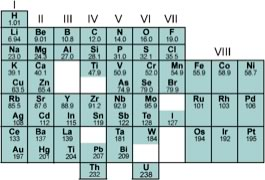

| Chapter 2.5: Organizing
elements: the periodic table introduced |
|
Up to this point, we have made a number of unjustified assumptions. We have talked about elements, but we have not explicitly specified how they are different, so let us do that now. If we start with hydrogen, we find that it is characterized by the presence of one proton, in the nucleus and one electron surrounding it. Atoms are always neutral, that is the number of positively charged particles is equal to the number of negatively charged particles (and charges come in discrete, equal and opposite units). The presence of 1 proton and 1 electron defines a hydrogen atom; but the world is a little more complex than that. A hydrogen atom may also contain 1 or 2 neutrons in its nucleus. A neutron can be considered (with the forgiveness of physicists) a proton and an electron (plus a neutrino, which is uncharged), and so it electrically neutral - its importance is that neutrons are involved in the strong nuclear force. |
2.1 Electrons & Orbitals |
In hydrogen, the neutrons (if they are present) have rather little to do, but in heavier elements the strong nuclear force is critical in holding the nucleus together, since at short distances it is approximately 100 times stronger than the repulsion between positively charged protons (which is why nuclei do not simply disintegrate.) At the same time, the strong force acts over a very limited range - when particles are separated by more that about 2 x 10-15 meters (femtometers or fm) it can, for all intends and purposes be ignored (at least by chemists). As we add one proton after another to an atom (which we can do in our minds, and can be done within stars and supernova, in a rather more complex manner), we generate the various elements. While the number of protons determines the elemental identity of an atom, the number of neutrons can vary. Atoms of the same element, but with different number of neutrons are known as isotopes of that element. Each element is characterized by a distinct, whole number (1,2,3, …) of protons (and the same whole number of electrons.) An interesting question emerges here: Is the number of possible elements infinite? and if not, why not? While theoretically, it might seem possible to keep adding protons (and neutrons and electrons) to produce a huge number of different types of atoms, as Rutherford established, the nucleus is quite small compared to the atom as a whole; typically between 1-10 fm in diameter. As we add more and more protons (and neutrons) the size of the nucleus exceed the effective range of the strong nuclear force (< 2 fm), and nuclei become unstable. As you might expect, unstable nuclei will break apart (nuclear fission), producing elements with smaller numbers of protons (different elements), a process that also releases tremendous amounts of energy. Different isotopes (that is, atoms with different numbers of neutrons, but the same number of protons), are more stable than others, which why the rate of decay can be used to calculate the age of rocks and other types of artifacts. So each element is defined by the number of protons in the nucleus, and as such is different from every other element. In fact, careful analysis of different elements revealed that there are periodicities (that is repeating patterns) in the properties of elements. Although John Dalton produced a table of elements with their atomic weights in 1805, it was only when Dimitri Mendeleev (1834-1907) tried to organize the elements in terms of their chemical and physical properties that some semblance of order began to emerge. Mendeleev, a Russian chemistry professor, was frustrated by the lack of organization of chemical information, so he decided to write his own textbook (not unlike your current authors). At the time about 60 elements had been identified, and their masses relative to hydrogen had been established. At that time, it had already been noticed that the elements display repeating patterns of behavior: some elements have very similar properties. It was Mendeleev’s insight that these patterns could be used as a to guide for arranging the elements in a systematic way .In his "periodic table", published in 1869, he placed elements in order of increasing atomic weight in repeating rows from left to right; elements with similar chemical properties were placed in vertical columns (known as groups.) |
| While several other scientists working on schemes to show patterns in elemental behavior, it is Mendeleev's arrangement (the basis of the modern Periodic Table) that emerged, not only because of the way he arranged the elements, but also for what he left out and what he changed. For example, he was so sure about the underlying logic of his table that where certain elements seemed out of place, based for example on their reported atomic weights, such as Tellurium and Iodine, he reversed them (and he turned out to be correct). |  |
|
Where elements should have been, but had not yet been discovered, he left gaps in his table to accommodate them. Subsequently, these elements (for example germanium, gallium and scandium) were discovered. In fact we now know that it is not atomic weight (basically the number of protons and neutrons), but rather atomic number, denoted by Z, that is the number of protons (and electrons) that increases periodically. This explains why Tellurium (atomic mass 127.6, Z= 52, must come before Iodine, atomic mass 126.9, Z=53). |
|
The important point to note is that while the modern periodic table is arranged in order of increasing number of protons and electrons, the repetition and patterns that emerge are the property of the electrons, their arrangements and energies. Which is our next subject. |
2.1
Electrons & Orbitals |
Question to answer:
Questions to ponder:
|
| 27-Jun-2012 |